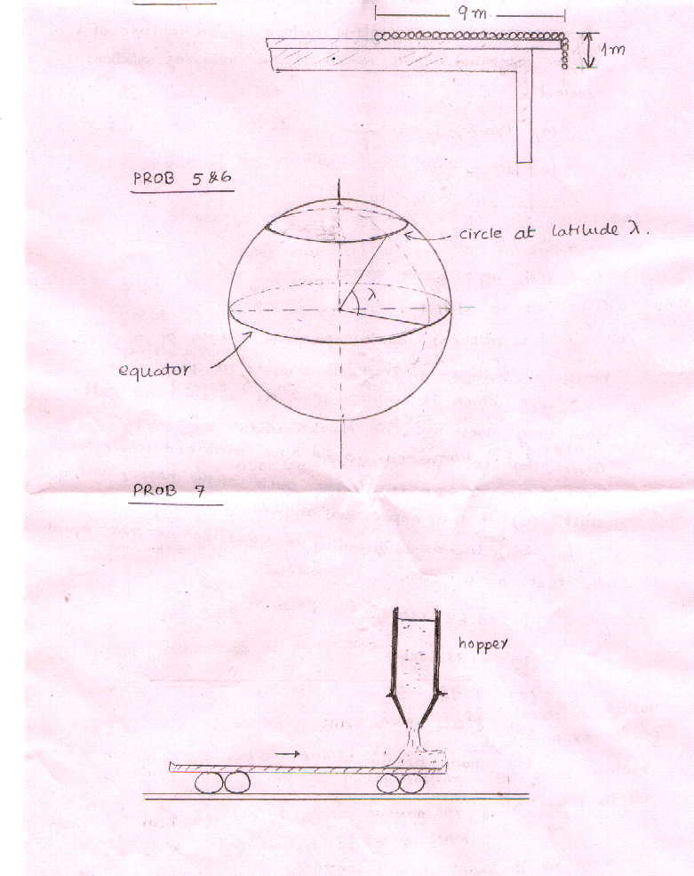

For Answers send a blank e-mail:
E-Mail: info@allsolutions4u.com
(a) va : vb :: 1 : 2
(b) va : vb :: 1 : 4
(c) va : vb :: 1 : sqrt(2)
(d) va : vb :: 4 : 5
(e) none of the above
Prob No. 2.
A ball rolls horizontally off top of the stairway with a speed 'u'. Height and width of the steps are 'h' and 'w' respectively. If the ball hits nth step first which of the following relations is true:
(a) n > 2u2/g × h/w2 > n-1
(b) n+1 > 2u2/g × h/w2 > n
(c) n+1 > 2u2/g × h2/w3 > n
(d) n+1 > 2u2/g × h/w > n
(e) none of the above
Prob No. 3
An uniform chain of 1.0 m length is held on a smooth, frictionless rectangular table along the line parallel to one of sides of the table such that 1/10th of the chain hangs off as shown (refer fig.). If the chain is released, how much time will it take to slide off the table completely?
(a) 1.006 sec
(b) 0.415 sec
(c) 0.830 sec
(d) 2.090 sec.
(e) none of the above
Prob No. 4
A satellite intended to be put on geosynchronous orbit, however, due to some error is placed 100 m too large. The speed at which the point directly below the satellite on the earth's surface drifts is:
( Mass of earth = 6.0×1024 kg,
Radius of earth = 6.4×106 m,
Universal Gravitational Constant G = 6.7×10-11m3/s2.kg)
(a) 10.8 km/hr.
(b) 800 m/sec.
(c) 5.94 m/hr
(d) 3.66 m/hr
(e) none of the above.
Prob No. 5
A stuntman rides his mobike inside a holow globe of radius R. If he runs the mobike along the equator (line of intersection of globe surface and horizontal plane passing through the centre of the globe ) the period of revolution will be given by:
(coefficient of friction between mobikes tyre & globes surface = n)
(a) T = 2 Pi sqrt( nR/g)
(b) T ≤ 2 Pi sqrt ((n+1) R/g)
(c) T ≤ 2Pi/n × sqrt (R/g)
(d) T ≤ 2Pi sqrt( n R/g)
(e) none of the above
Prob No. 6
Refer problem no. 5. If the stuntman runs his mobike along the circle described on the globe surface at an latitude L (refer fig.) then which of the following relations is correct
(a) tan L > n
(b) tan L < n
(c) tan L < tan-1 n
(d) L = tan-1 n
(e) none of the above
Prob No. 7
A railroad flatcar which is given a velocity on a horizontal frictionless track is allowed to pass under a hopper which is spilling sand at a constant rate. How long does the car remain under the hopper? Given that (a) The car would have remained under the hopper for 6 sec if the outlet of the hopper was shut. (b) If the hopper was allowed to spill for 12 seconds it would have discharged quantity of sand havimg mass equal to that of the car.
(a) 10.62 sec
(b) 6.81 sec
(c) 7.87 sec
(d) 8.02 sec
(e) none of the above
PROB 3
